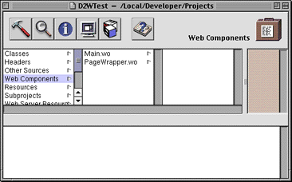
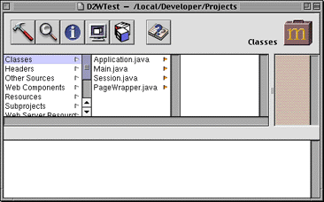
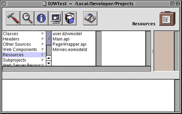

PATH
WebObjects 4.0 Documentation >
WebObjects Tools and Techniques
 Table of Contents
Table of Contents  Previous Section
Previous Section
The Structure of a Direct to Web Project
A Direct to Web project has a structure similar to other WebObjects application projects. A newly created project contains two components:

As you run your application, Direct to Web creates additional pages, using information in your model file and the settings specified in the WebAssistant. These pages do not show up as components in your project. Rather, Direct to Web creates them dynamically using a set of reusable components in the Direct to Web framework. However, you can save any page as a component. When you do that, you are then able to modify the component just as you would with any other WebObjects component. See "Generating Components" for more information.
In your project's Classes suitcase, you'll see a Java file for each of the components, as well as the Session and Application objects. You can add code to any of these files to extend their functionality. See "Modifying Your Application's Code" for more information on the Direct to Web API.

The Resources suitcase contains the model file you specified when you created the project (in this example, Movies.eomodeld). It also contains user.d2wmodel, which stores the preferences you have specified using the WebAssistant (you should never need to edit this file directly). The Resources suitcase also holds files specifying the exported keys, both optional and required, for each type of component used in the application; these files have an extension of .api.

Table of Contents  Next Section
Next Section